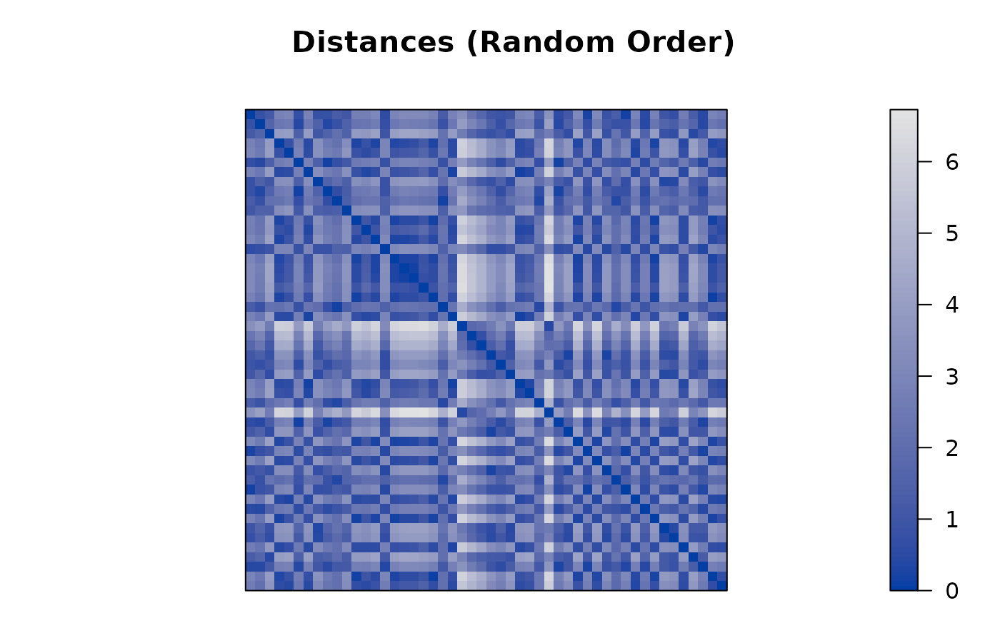
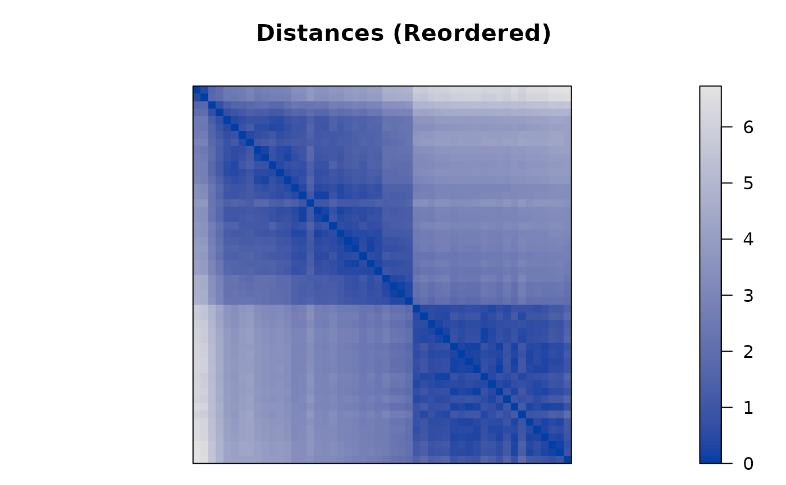
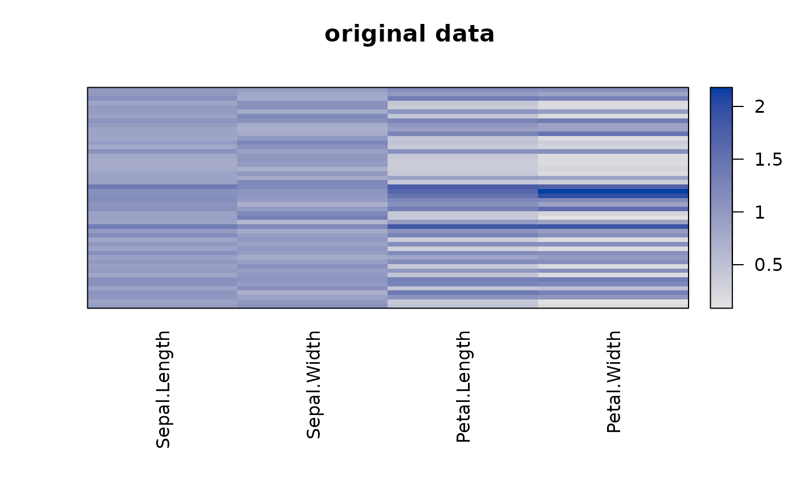
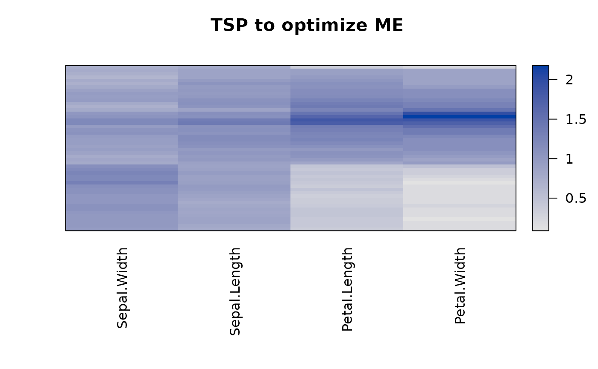
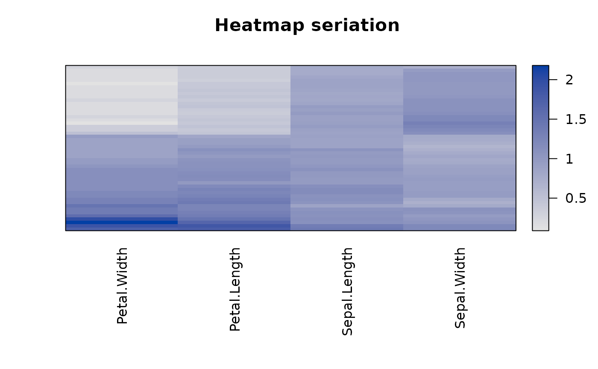
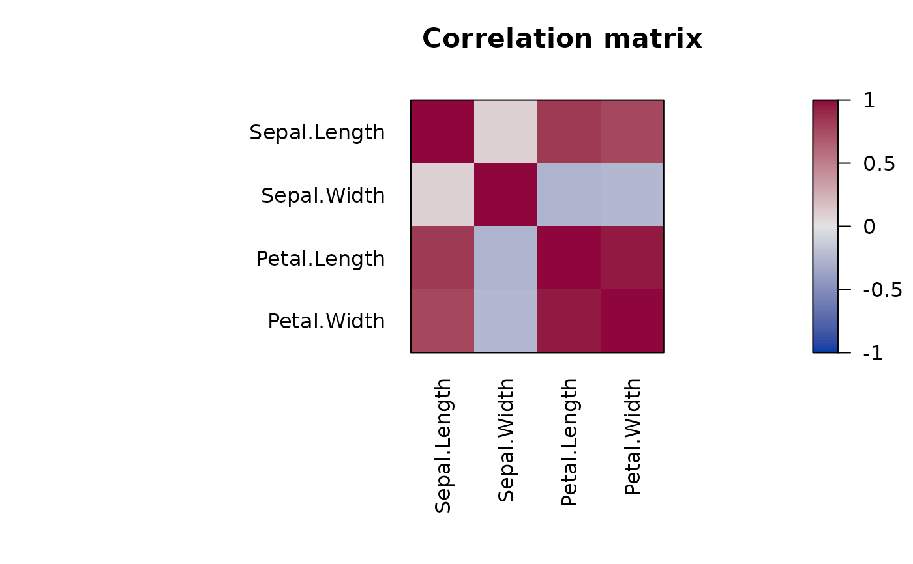
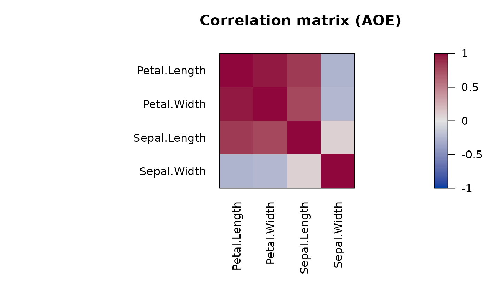
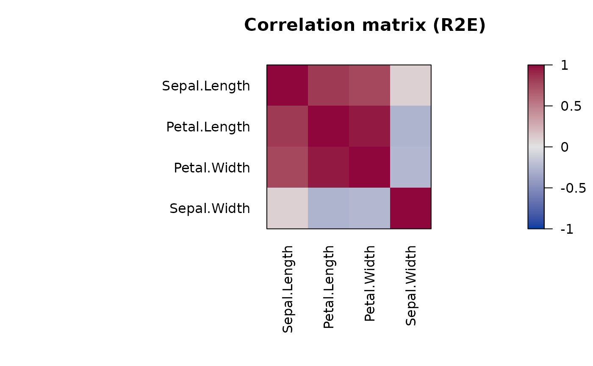

Seriate Dissimilarity Matrices, Matrices or Arrays
Source:R/seriate.R, R/seriate.dist.R, R/seriate.matrix.R, and 3 more
seriate.RdTries to find a linear order for objects using data in the form of a
dissimilarity matrix (two-way one-mode data), a data matrix (two-way
two-mode data), or a data array (k-way k-mode data). The order can then be
used to reorder the dissimilarity matrix/data matrix using
permute().
Usage
seriate(x, ...)
# S3 method for class 'dist'
seriate(x, method = "Spectral", control = NULL, rep = 1L, ...)
# S3 method for class 'matrix'
seriate(x, method = "PCA", control = NULL, margin = c(1L, 2L), rep = 1L, ...)
# S3 method for class 'array'
seriate(
x,
method = "PCA",
control = NULL,
margin = seq(length(dim(x))),
rep = 1L,
...
)
# S3 method for class 'data.frame'
seriate(
x,
method = "Heatmap",
control = NULL,
margin = c(1L, 2L),
rep = 1L,
...
)
# S3 method for class 'table'
seriate(x, method = "CA", control = NULL, margin = c(1L, 2L), ...)Arguments
- x
the data.
- ...
further arguments are added to the
controllist.- method
a character string with the name of the seriation method (default: varies by data type).
- control
a list of control options passed on to the seriation algorithm.
- rep
number of random restarts for randomized methods. Uses
seriate_rep().- margin
an integer vector giving the margin indices (dimensions) to be seriated. For example, for a matrix,
1indicates rows,2indicates columns,c(1 ,2)means rows and columns. Unseriated margins return the identity seriation order for that margin.
Value
Returns an object of class ser_permutation.
Details
Seriation methods are managed via a registry. See
list_seriation_methods() for help. In the following, we focus on
discussing the
built-in methods that are registered automatically by the package seriation.
The available control options, default settings, and
a description for each algorithm
can be retrieved using get_seriation_method(name = "<seriation method>").
Some control parameters are also described in more detail below.
Some methods are very slow, and progress can be printed using the control
parameter verbose = TRUE.
Many seriation methods (heuristically) optimize (minimize or maximize) an
objective function often called seriation criterion.
The value of the seriation criterion for a given order can be
calculated using criterion(). In this manual page, we
include the criterion, which is optimized by each method using bold font.
If no criterion is mentioned, then the method does not directly optimize a criterion.
A definition of the different seriation criteria can be found on the criterion() manual page.
Seriation methods for distance matrices (dist)
One-mode two-way data must be provided as a dist object (not a symmetric matrix). Similarities have to be transformed into dissimilarities. Seriation algorithms fall into different groups based on the approach. In the following, we describe the currently implemented methods. A list with all methods and the available parameters is available here. Hahsler (2017) for a more detailed description and an experimental comparison of the most popular methods.
Dendrogram leaf order
These methods create a dendrogram using hierarchical clustering and then derive the seriation order from the leaf order in the dendrogram. Leaf reordering may be applied.
Hierarchical clustering:
"HC","HC_single","HC_complete","HC_average","HC_ward"Uses the order of the leaf nodes in a dendrogram obtained by hierarchical clustering as a simple seriation technique. This method applies hierarchical clustering (
stats::hclust()) tox. The clustering method can be given using a"linkage"element in thecontrollist. If omitted, the default"complete"is used. For convenience, the other methods are provided as shortcuts.Reordered by the Gruvaeus and Wainer heuristic:
"GW","GW_single","GW_average","GW_complete","GW_ward"(Gruvaeus and Wainer, 1972)Method
"GW"uses an algorithm developed by Gruvaeus and Wainer (1972) as implementedgclus::reorder.hclust()(Hurley 2004). The clusters are ordered at each level so that the objects at the edge of each cluster are adjacent to the nearest object outside the cluster. The method produces a unique order.The methods start with a dendrogram created by
hclust(). As the"linkage"element in thecontrollist, a clustering method (default"average") can be specified. Alternatively, an stats::hclust object can be supplied using an element named"hclust".A dendrogram (binary tree) has \(2^{n-1}\) internal nodes (subtrees) and the same number of leaf orderings. That is, at each internal node, the left and right subtree (or leaves) can be swapped or, in terms of a dendrogram, be flipped. The leaf-node reordering to minimize
Minimizes the Hamiltonian path length (restricted by the dendrogram).
Reordered by optimal leaf ordering:
"OLO","OLO_single","OLO_average","OLO_complete","OLO_ward"(Bar-Joseph et al., 2001)Starts with a dendrogram and produces an optimal leaf ordering that minimizes the sum of the distances along the (Hamiltonian) path connecting the leaves in the given order. The algorithm's time complexity is \(O(n^3)\). Note that non-finite distance values are not allowed.
Minimizes the Hamiltonian path length (restricted by the dendrogram).
Dendrogram seriation:
"DendSer"(Earle and Hurley, 2015)Use heuristic dendrogram seriation to optimize for various criteria. The DendSer code has to be first registered. A detailed description can be found on the manual page for
register_DendSer().
Dimensionality reduction
Find a seriation order by reducing the dimensionality to 1 dimension. This is typically done by minimizing a stress measure or the reconstruction error. Note that dimensionality reduction to a single dimension is a very difficult discrete optimization problem. For example, MDS algorithms used for a single dimension tend to end up in local optima (see Maier and De Leeuw, 2015). However, generally, ordering along a single component of MDS provides good results sufficient for applications like visualization.
Classical metric multidimensional scaling:
"MDS"Orders along the 1D classical metric multidimensional scaling.
controlparameters are passed on tostats::cmdscale().Isometric feature mapping:
"isomap"(Tenenbaum, 2000)Orders along the 1D isometric feature mapping.
controlparameters are passed on tovegan::isomap()Kruskal's non-metric multidimensional scaling:
"isoMDS","monoMDS","metaMDS"(Kruskal, 1964)Orders along the 1D Kruskal's non-metric multidimensional scaling. Package vegan provides an alternative implementation called
monoMDSand a version that uses random restarts for stability calledmetaMDS.controlparameters are passed on toMASS::isoMDS(),vegan::monoMDS()orvegan::metaMDS().Sammon's non-linear mapping:
"Sammon_mapping"(Sammon, 1969)Orders along the 1D Sammon's non-linear mapping.
controlparameters are passed on toMASS::sammon().Angular order of the first two eigenvectors:
"MDS_angle"Finds a 2D configuration using MDS (
stats::cmdscale()) to approximate the eigenvectors of the covariance matrix in the original data matrix. Orders by the angle in this space and splits the order by the largest gap between adjacent angles. A similar method was used by Friendly (2002) to order variables in correlation matrices by angles of first two eigenvectors.Smacof:
"MDS_smacof"(de Leeuw and Mair, 2009)Perform seriation using stress majorization with several transformation functions. This method has to be registered first using
register_smacof().
Optimization
These methods try to optimize a seriation criterion directly, typically using a heuristic approach.
Anti-Robinson seriation by simulated annealing:
"ARSA"(Brusco et al 2008)The algorithm automatically finds a suitable start temperature and calculates the needed number of iterations. The algorithm gets slow for a large number of objects. The speed can be improved by lowering the cooling parameter
"cool"or increasing the minimum temperature"tmin". However, this will decrease the seriation quality.Directly minimizes the linear seriation criterion (LS).
Complete Enumeration:
"Enumerate"This method finds the optimal permutation given a seriation criterion by complete enumeration of all permutations. The criterion is specified as the
controlparameters"criterion". Default is the weighted gradient measure. Use"verbose = TRUE"to see the progress.Note: The number of permutations for \(n\) objects is \(n!\). Complete enumeration is only possible for tiny problems (<10 objects) and is limited on most systems to a problem size of up to 12 objects.
Gradient measure seriation by branch-and-bound:
"BBURCG","BBWRCG"(Brusco and Stahl 2005)The method uses branch-and-bound to minimize the unweighted gradient measure (
"BBURCG") and the weighted gradient measure ("BBWRCG"). This type of optimization is only feasible for a small number of objects (< 50 objects).For BBURCG, the control parameter
"eps"can be used to relax the problem by defining that a distance needs to be eps larger to count as a violation. This relaxation will improve the speed, but miss some Robinson events. The default value is 0.Genetic Algorithm:
"GA"The GA code has to be first registered. A detailed description can be found on the manual page for
register_GA().Quadratic assignment problem seriation:
"QAP_LS","QAP_2SUM","QAP_BAR","QAP_Inertia"(Hahsler, 2017)Formulates the seriation problem as a quadratic assignment problem and applies a simulated annealing solver to find a good solution. These methods minimize the Linear Seriation Problem (LS) formulation (Hubert and Schultz 1976), the 2-Sum Problem formulation (Barnard, Pothen, and Simon 1993), the banded anti-Robinson form (BAR), or the inertia criterion.
controlparameters are passed on toqap::qap(). An important parameter isrepto return the best result from the given number of repetitions with random restarts. The default is 1, but bigger numbers result in better and more stable results.General Simulated Annealing:
"GSA"(Hahsler, Hornik, and Buchta, 2023)Implement simulated annealing similar to the ARSA method (Brusco et al 2008) which can optimize for any criterion measure defined in seriation. By default, the algorithm optimizes for the raw gradient measure, and is warm started with the result of spectral seriation (2-Sum problem) since Hahsler (2017) shows that 2-Sum solutions are similar to solutions for the gradient measure. This method was first introduced in the R package seriation version 1.5.0.
Use
warmstart = "random"for no warm start.The initial temperature
t0and minimum temperaturetmincan be set. Ift0is not set, then it is estimated by sampling uphill moves and settingt0such that the median uphill move have a probability oftinitialaccept. Using the cooling ratecool, the number of iterations to go fort0totminis calculated.Several popular local neighborhood functions are provided, and new ones can be defined (see LS). Local moves are tried in each iteration
nlocaltimes the number of objects.Note that this is an R implementation repeatedly calling the criterion function which is very slow.
Stochastic greedy local search:
"SGLS"(Hahsler, Hornik, and Buchta, 2023)Starts with a solution and repeatedly applies a randomly selected local move, accepting only moves that improve the specified criterion. This is stochastic greedy local search over permutations. This method was first introduced in the R package seriation version 1.5.0.
Important
controlparameters:"criterion": the criterion to optimize"init": initial seriation (an order or the name of a seriation method)"max_iter": number of trials
Spectral seriation:
"Spectral","Spectral_norm"(Ding and He, 2004)Spectral seriation uses a relaxation to minimize the 2-Sum Problem (Barnard, Pothen, and Simon, 1993). It uses the order of the Fiedler vector of the similarity matrix's (normalized) Laplacian.
Spectral seriation gives a good trade-off between seriation quality, and scalability (see Hahsler, 2017).
Traveling salesperson problem solver:
"TSP"Uses a traveling salesperson problem solver to minimize the Hamiltonian path length. The solvers in TSP are used (see
TSP::solve_TSP()). The solver method can be passed on via thecontrolargument, e.g.,control = list(method = "two_opt"). Default is the est of 10 runs of arbitrary insertion heuristic with 2-opt improvement.Since a tour returned by a TSP solver is a connected circle and we are looking for a path representing a linear order, we need to find the best cutting point. Climer and Zhang (2006) suggest adding a dummy city with equal distance to each other city before generating the tour. The place of this dummy city in an optimal tour with minimal length is the best cutting point (it lies between the most distant cities).
Other Methods
Identity permutation: `"Identity"
Reverse Identity permutation: `"Reverse"
Random permutation:
"Random"Rank-two ellipse seriation:
"R2E"(Chen 2002)Rank-two ellipse seriation starts with generating a sequence of correlation matrices \(R^1, R^2, \ldots\). \(R^1\) is the correlation matrix of the original distance matrix \(D\) (supplied to the function as
x), and $$R^{n+1} = \phi R^n,$$ where \(\phi\) calculates the correlation matrix.The rank of the matrix \(R^n\) falls with increasing \(n\). The first \(R^n\) in the sequence, which has a rank of 2 is found. Projecting all points in this matrix on the first two eigenvectors, all points fall on an ellipse. The order of the points on this ellipse is the resulting order.
The ellipse can be cut at the two interception points (top or bottom) of the vertical axis with the ellipse. In this implementation, the topmost cutting point is used.
Sorting Points Into Neighborhoods:
"SPIN_STS","SPIN_NH"(Tsafrir, 2005)Given a weight matrix \(W\), the SPIN algorithms try to minimize the energy for a permutation (matrix \(P\)) given by $$F(P) = tr(PDP^TW),$$ where \(tr\) denotes the matrix trace.
"SPIN_STS"implements the Side-to-Side algorithm, which tries to push out large distance values. The default weight matrix suggested in the paper with \(W=XX^T\) and \(X_i=i-(n+1)/2\) is used. We run the algorithm formstep(25) iteration and restart the algorithmnstart(10) with random initial permutations (default values in parentheses)."SPIN_NH"implements the neighborhood algorithm (concentrate low distance values around the diagonal) with a Gaussian weight matrix \(W_{ij} = exp(-(i-j)^2/n\sigma)\), where \(n\) is the size of the dissimilarity matrix and \(\sigma\) is the variance around the diagonal that control the influence of global (large \(\sigma\)) or local (small \(\sigma\)) structure.We use the heuristic suggested in the paper for the linear assignment problem. We do not terminate as indicated in the algorithm but run all the iterations since the heuristic does not guarantee that the energy is strictly decreasing. We also implement the heuristic "annealing" scheme where \(\sigma\) is successively reduced. The parameters in
controlaresigmawhich can be a single value or a decreasing sequence (default: 20 to 1 in 10 steps), andstep, which defines how many update steps are performed before for each value ofalpha. ViaW_functiona custom function to create \(W\) with the function signaturefunction(n, sigma, verbose)can be specified.Visual Assessment of (Clustering) Tendency:
"VAT"(Bezdek and Hathaway, 2002).Creates an order based on Prim's algorithm for finding a minimum spanning tree (MST) in a weighted connected graph representing the distance matrix. The order is given by the order in which the nodes (objects) are added to the MST.
Seriation methods for matrices (matrix)
Two-mode two-way data are general matrices. Some methods also require that the matrix is positive. Data frames and contingency tables (base::table) are converted into a matrix. However, the default methods are different.
Some methods find the row and column order simultaneously,
while others calculate them independently.
Currently, the
following methods are implemented for matrix:
Seriating rows and columns simultaneously
Row and column order influence each other.
Bond Energy Algorithm:
"BEA"(McCormick, 1972).The algorithm tries to maximize a non-negative matrix's Measure of Effectiveness. Due to the definition of this measure, the tasks of ordering rows and columns are separable and can be solved independently.
BEA consists of the following three steps:
Place one randomly chosen column.
Try to place each remaining column at each possible position left, right and between the already placed columns and calculate every time the increase in ME. Choose the column and position which gives the largest increase in ME and place the column. Repeat till all columns are placed.
Repeat procedure with rows.
The overall procedure amounts to two approximate traveling salesperson problems (TSP) where the distance is the -1 times the ME increase. The BEA algorithm is equivalent to a simple suboptimal TSP heuristic called 'cheapest insertion'. Several consecutive runs of the algorithm might improve the energy if a better initial column/row is chosen.
Arabie and Hubert (1990) question its use with non-binary data if the objective is to find a seriation or one-dimensional orderings of rows and columns.
TSP to optimize the Measure of Effectiveness:
"BEA_TSP"(Lenstra 1974).Since BEA is equivalent to a simple TSP heuristic, we can use better TSP solvers to get better results. Distances between rows are calculated for a \(M \times N\) data matrix as $$d_{jk} = - \sum_{i=1}^{i=M} x_{ij}x_{ik}\ (j,k=0,1,...,N).$$
Distances between columns are calculated the same way from the transposed data matrix.
Solving the two TSP using these distances optimizes the measure of effectiveness. With an exact TSP solver, the optimal solution can be found.
controlparameter:"method": a TSP solver method (seeTSP::solve_TSP()).
Unconstrained Brower and Kyle seriation:
"BK_unconstrained"(Brower and Kyle 1988).Reorders 0-1 matrices to create a block structure along the diagonal. It iteratively reorders by the mean row indices of 1s and mean column indices of 1s till the orders become stable.
controlparameter: NoneCorrespondence analysis
"CA"(Friendly, 2023)This function is designed to help simplify a mosaic plot or other displays of a matrix of frequencies. It calculates a correspondence analysis of the matrix and an order for rows and columns according to the scores on a correspondence analysis dimension.
This is the default method for contingency tables.
controlparameters:"dim": CA dimension used for reordering."ca_param": List with parameters for the call toca::ca().
Seriating rows and columns separately using dissimilarities
Heatmap seriation:
"Heatmap"Calculates distances between rows and between columns and then applies seriation so each. This is the default method for data frames.
controlparameter:"seriation_method": a list with row and column seriation methods. The special method"HC_Mean"is available to use hierarchical clustering with reordering the leaves by the row/column means (seestats::heatmap()). Defaults to optimal leaf ordering"OLO"."seriation_control": a list with control parameters for row and column seriation methods."dist_fun": specify the distance calculation as a function."scale":"none","row", or"col".
Seriate rows using the data matrix
These methods need access to the data matrix instead of dissimilarities to reorder objects (rows). Columns can also be reordered by applying the same technique to the transposed data matrix.
Order along the 1D locally linear embedding:
"LLE"
Performs 1D the non-linear dimensionality reduction method locally linear embedding
(see lle()).
Order along the first principal component:
"PCA"Uses the projection of the data on its first principal component (using
stats::princomp()) to determine the order of rows. Performs the same procedure on the transposed matrix to obtain the column order.Note that for a distance matrix calculated from
xwith Euclidean distance, this method minimizes the least square criterion.Angular order of the first two PCA components:
"PCA_angle"For rows, projects the data on the first two principal components and then orders by the angle in this space. The order is split by the largest gap between adjacent angles. A similar method was suggested by Friendly (2002) to order variables in correlation matrices by angles of first two eigenvectors. PCA also computes the eigenvectors of the covariance matrix of the data.
Performs the same process on the transposed matrix for the column order.
Other methods
Angular order of the first two eigenvectors:
"AOE"(Friendly 2002)This method reordered correlation matrices by the angle in the space spanned by the two largest eigenvectors of the matrix. The order is split by the largest angle gap. This is the original method proposed by Friendly (2002).
By row/column mean:
"Mean"A transformation can be applied before calculating the means. The function is specified as control parameter
"transformation". Any function that takes as an input a matrix and returns the transformed matrix can be used. Examples arescaleor\(x) x^.5.Identity permutation:
"Identity"Reverse Identity permutation:
"Reverse"Random permutation:
"Random"
For general arrays no built-in methods are currently available.
References
Arabie, P. and L.J. Hubert (1990): The bond energy algorithm revisited, IEEE Transactions on Systems, Man, and Cybernetics, 20(1), 268–274. doi:10.1109/21.47829
Bar-Joseph, Z., E. D. Demaine, D. K. Gifford, and T. Jaakkola. (2001): Fast Optimal Leaf Ordering for Hierarchical Clustering. Bioinformatics, 17(1), 22–29. doi:10.1093/bioinformatics/17.suppl_1.S22
Barnard, S. T., A. Pothen, and H. D. Simon (1993): A Spectral Algorithm for Envelope Reduction of Sparse Matrices. In Proceedings of the 1993 ACM/IEEE Conference on Supercomputing, 493–502. Supercomputing '93. New York, NY, USA: ACM. https://ieeexplore.ieee.org/document/1263497
Bezdek, J.C. and Hathaway, R.J. (2002): VAT: a tool for visual assessment of (cluster) tendency. Proceedings of the 2002 International Joint Conference on Neural Networks (IJCNN '02), Volume: 3, 2225–2230. doi:10.1109/IJCNN.2002.1007487
Brower, J.C. and Kile, K.M. (1988): Sedation of an original data matrix as applied to paleoecology. Lethaia, 21, 79–93. doi:10.1111/j.1502-3931.1988.tb01756.x
Brusco, M., Koehn, H.F., and Stahl, S. (2008): Heuristic Implementation of Dynamic Programming for Matrix Permutation Problems in Combinatorial Data Analysis. Psychometrika, 73(3), 503–522. doi:10.1007/s11336-007-9049-5
Brusco, M., and Stahl, S. (2005): Branch-and-Bound Applications in Combinatorial Data Analysis. New York: Springer. doi:10.1007/0-387-28810-4
Chen, C. H. (2002): Generalized Association Plots: Information Visualization via Iteratively Generated Correlation Matrices. Statistica Sinica, 12(1), 7–29.
Ding, C. and Xiaofeng He (2004): Linearized cluster assignment via spectral ordering. Proceedings of the Twenty-first International Conference on Machine learning (ICML '04). doi:10.1145/1015330.1015407
Climer, S. and Xiongnu Zhang (2006): Rearrangement Clustering: Pitfalls, Remedies, and Applications, Journal of Machine Learning Research, 7(Jun), 919–943.
D. Earle, C. B. Hurley (2015): Advances in dendrogram seriation for application to visualization. Journal of Computational and Graphical Statistics, 24(1), 1–25.
Friendly, M. (2002): Corrgrams: Exploratory Displays for Correlation Matrices. The American Statistician, 56(4), 316–324. doi:10.1198/000313002533
Friendly, M. (2023). vcdExtra: 'vcd' Extensions and Additions. R package version 0.8-5, https://CRAN.R-project.org/package=vcdExtra.
Gruvaeus, G. and Wainer, H. (1972): Two Additions to Hierarchical Cluster Analysis, British Journal of Mathematical and Statistical Psychology, 25, 200–206. doi:10.1111/j.2044-8317.1972.tb00491.x
Hahsler, M. (2017): An experimental comparison of seriation methods for one-mode two-way data. European Journal of Operational Research, 257, 133–143. doi:10.1016/j.ejor.2016.08.066
Hahsler M, Buchta C, Hornik K (2023). seriation: Infrastructure for Ordering Objects Using Seriation. R package version 1.5.0/ doi:10.32614/CRAN.package.seriation
Hubert, Lawrence, and James Schultz (1976): Quadratic Assignment as a General Data Analysis Strategy. British Journal of Mathematical and Statistical Psychology, 29(2). Blackwell Publishing Ltd. 190–241. doi:10.1111/j.2044-8317.1976.tb00714.x
Hurley, Catherine B. (2004): Clustering Visualizations of Multidimensional Data. Journal of Computational and Graphical Statistics, 13(4), 788–806. doi:10.1198/106186004X12425
Kruskal, J.B. (1964). Nonmetric multidimensional scaling: a numerical method. Psychometrika, 29, 115–129.
Lenstra, J.K (1974): Clustering a Data Array and the Traveling-Salesman Problem, Operations Research, 22(2) 413–414. doi:10.1287/opre.22.2.413
Mair P., De Leeuw J. (2015). Unidimensional scaling. In Wiley StatsRef: Statistics Reference Online, Wiley, New York. doi:10.1002/9781118445112.stat06462.pub2
McCormick, W.T., P.J. Schweitzer and T.W. White (1972): Problem decomposition and data reorganization by a clustering technique, Operations Research, 20(5), 993–1009. doi:10.1287/opre.20.5.993
Tenenbaum, J.B., de Silva, V. & Langford, J.C. (2000) A global network framework for nonlinear dimensionality reduction. Science 290, 2319-2323.
Tsafrir, D., Tsafrir, I., Ein-Dor, L., Zuk, O., Notterman, D.A. and Domany, E. (2005): Sorting points into neighborhoods (SPIN): data analysis and visualization by ordering distance matrices, Bioinformatics, 21(10) 2301–8. doi:10.1093/bioinformatics/bti329
Sammon, J. W. (1969) A non-linear mapping for data structure analysis. IEEE Trans. Comput., C-18 401–409.
Examples
# Show available seriation methods (for dist and matrix)
list_seriation_methods()
#> $array
#> [1] "Identity" "Random" "Reverse"
#>
#> $dist
#> [1] "ARSA" "BBURCG" "BBWRCG" "Enumerate"
#> [5] "GSA" "GW" "GW_average" "GW_complete"
#> [9] "GW_single" "GW_ward" "HC" "HC_average"
#> [13] "HC_complete" "HC_single" "HC_ward" "Identity"
#> [17] "MDS" "MDS_angle" "OLO" "OLO_average"
#> [21] "OLO_complete" "OLO_single" "OLO_ward" "QAP_2SUM"
#> [25] "QAP_BAR" "QAP_Inertia" "QAP_LS" "R2E"
#> [29] "Random" "Reverse" "SGD" "SGLS"
#> [33] "SPIN_NH" "SPIN_STS" "Sammon_mapping" "Spectral"
#> [37] "Spectral_norm" "TSP" "VAT" "isoMDS"
#> [41] "isomap" "metaMDS" "monoMDS"
#>
#> $matrix
#> [1] "AOE" "BEA" "BEA_TSP" "BK_unconstrained"
#> [5] "CA" "Heatmap" "Identity" "LLE"
#> [9] "Mean" "PCA" "PCA_angle" "Random"
#> [13] "Reverse" "Reverse_rows"
#>
# show the description for ARSA
get_seriation_method("dist", name = "ARSA")
#> name: ARSA
#> kind: dist
#> optimizes: LS (Linear seriation criterion)
#> randomized: TRUE
#> description: Minimize the linear seriation criterion using simulated
#> annealing (Brusco et al, 2008).
#> control:
#> default values help
#> cool 0.5 cooling factor (smaller means faster cooling)
#> tmin 1e-04 stopping temperature
#> swap_to_inversion 0.5 probability for swap vs inversion local move
#> try_multiplier 100 number of local move tries per object
#> verbose FALSE N/A
#>
### Seriate as distance matrix (for 50 flowers from the iris dataset)
data("iris")
x <- as.matrix(iris[-5])
x <- x[sample(nrow(x), size = 50), ]
d <- dist(x)
order <- seriate(d)
order
#> object of class ‘ser_permutation’, ‘list’
#> contains permutation vectors for 1-mode data
#>
#> vector length seriation method
#> 1 50 Spectral
pimage(d, main = "Distances (Random Order)")

pimage(d, order, main = "Distances (Reordered)")

# Compare seriation quality
rbind(
random = criterion(d),
reordered = criterion(d, order)
)
#> 2SUM AR_deviations AR_events BAR Gradient_raw
#> random 407543.9 33193.9801 20965 5883.512 -2750
#> reordered 240032.3 498.8361 2743 2279.242 33685
#> Gradient_weighted Inertia LS Lazy_path_length Least_squares
#> random -5620.79 2240354 93831.42 2556.6139 872417.7
#> reordered 55903.77 3950519 134847.80 774.5179 790384.9
#> MDS_stress ME Moore_stress Neumann_stress Path_length
#> random 0.8122803 726.7831 1437.6307 762.0997 108.95963
#> reordered 0.7881982 899.5110 232.2679 111.6645 29.72868
#> RGAR Rho
#> random 0.53482143 0.0589791
#> reordered 0.06997449 0.8826470
# Reorder the distance matrix
d_reordered <- permute(d, order)
pimage(d_reordered, main = "Distances (Reordered)")
 ### Seriate a matrix (50 flowers from iris)
# To make the variables comparable, we scale the data
x <- scale(x, center = FALSE)
# The iris flowers are ordered by species in the data set
pimage(x, main = "original data", prop = FALSE)
### Seriate a matrix (50 flowers from iris)
# To make the variables comparable, we scale the data
x <- scale(x, center = FALSE)
# The iris flowers are ordered by species in the data set
pimage(x, main = "original data", prop = FALSE)

criterion(x)
#> Cor_R DiagSum ME Moore_stress Neumann_stress
#> 7.916791e-03 3.383587e+00 3.065939e+02 2.752647e+02 1.317923e+02
# Apply some methods
order <- seriate(x, method = "BEA_TSP")
pimage(x, order, main = "TSP to optimize ME", prop = FALSE)

criterion(x, order)
#> Cor_R DiagSum ME Moore_stress Neumann_stress
#> -0.242765 3.410857 334.919513 70.131874 26.119724
order <- seriate(x, method = "PCA")
pimage(x, order, main = "First principal component", prop = FALSE)
criterion(x, order)
#> Cor_R DiagSum ME Moore_stress Neumann_stress
#> -0.2838146 6.2348981 330.2424475 65.4999866 25.5094953
order <- seriate(x, method = "heatmap")
pimage(x, order, main = "Heatmap seriation", prop = FALSE)
 criterion(x, order)
#> Cor_R DiagSum ME Moore_stress Neumann_stress
#> -0.2758385 2.4399829 331.4898548 64.6917229 23.7732305
# reorder the matrix
x_reordered <- permute(x, order)
# create a heatmap seriation manually by calculating
# distances between rows and between columns
order <- c(
seriate(dist(x), method = "OLO"),
seriate(dist(t(x)), method = "OLO")
)
pimage(x, order, main = "Heatmap seriation", prop = FALSE)
criterion(x, order)
#> Cor_R DiagSum ME Moore_stress Neumann_stress
#> -0.2758385 2.4399829 331.4898548 64.6917229 23.7732305
# reorder the matrix
x_reordered <- permute(x, order)
# create a heatmap seriation manually by calculating
# distances between rows and between columns
order <- c(
seriate(dist(x), method = "OLO"),
seriate(dist(t(x)), method = "OLO")
)
pimage(x, order, main = "Heatmap seriation", prop = FALSE)

criterion(x, order)
#> Cor_R DiagSum ME Moore_stress Neumann_stress
#> -0.2758385 2.4399829 331.4898548 64.6917229 23.7732305
### Seriate a correlation matrix
corr <- cor(x)
# plot in original order
pimage(corr, main = "Correlation matrix")

# reorder the correlation matrix using the angle of eigenvectors
pimage(corr, order = "AOE", main = "Correlation matrix (AOE)")

# we can also define a distance (we used d = sqrt(1 - r)) and
# then reorder the matrix (rows and columns) using any seriation method.
d <- as.dist(sqrt(1 - corr))
o <- seriate(d, method = "R2E")
corr_reordered <- permute(corr, order = c(o, o))
pimage(corr_reordered, main = "Correlation matrix (R2E)")
